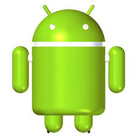

História do mascote do android
Provavelmente você sabe que o sistema operacional Android,mantido pelo Google é um dos mais utilizados para dispositivos móveis em todo o mundo. Mas talvez você não saiba que o simpático mascote tem um nome e uma história muito curiosa?Pois acompanhe esse artigo para aprender muita coisa sobre esse robozinho
A primeira versão
A primeira versão tentativa de criar um mascote surgiu em 2007 e veio de um desenvolvedor chamado Dan Morrill Ele conta que abriu o Inkscape (software livre para vetorização de imagens) e criou a sua propria versão do robo. O objetivo era apenas personificar o sistema apenas para a sua equipe,não existia nenhuma solicitação da empresa para a criação de um mascote

Essa é a primeira versão bizarra até foi batizada ao seu criador seriam os Dandroids
Surge um novo mascote
A ideia de ter um mascote foi amadurecendo e a missão foi passada para uma profissional da área. A ilustradora Russa Irina Blok também funcionária do Google,ficou com a missão de representar o pequeno robô de uma maneira mais agradável
A ideia principal da Irina era representar tudo gráficamente com poucos traços e forma mais chapada.O desenho também deveria gerar indentificação rápida com quem o olha surgiu então o Bugdroid,o novo mascote do Android
A principal inspiração para os traços do novo Bugdroid veio daqueles bonequinhos que ilustramm portas de banheiro para indicar o gênero de cada porta Conta a lenda que a artista estava criando em sua mesa no escritório do Google e olhou para o lada dos:banheiros e a indentificação foi imediato;simples,limpo,objetivo
Evoluçao do android